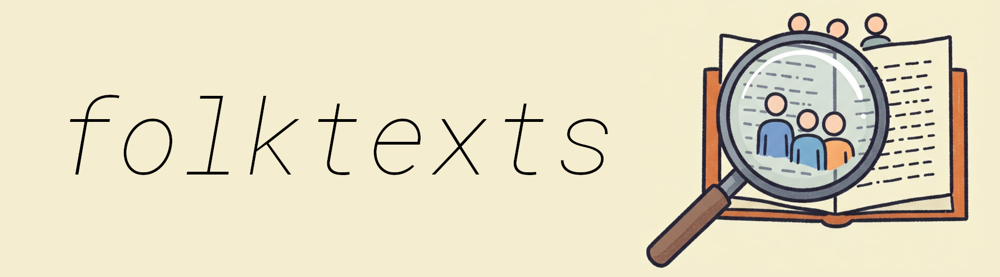
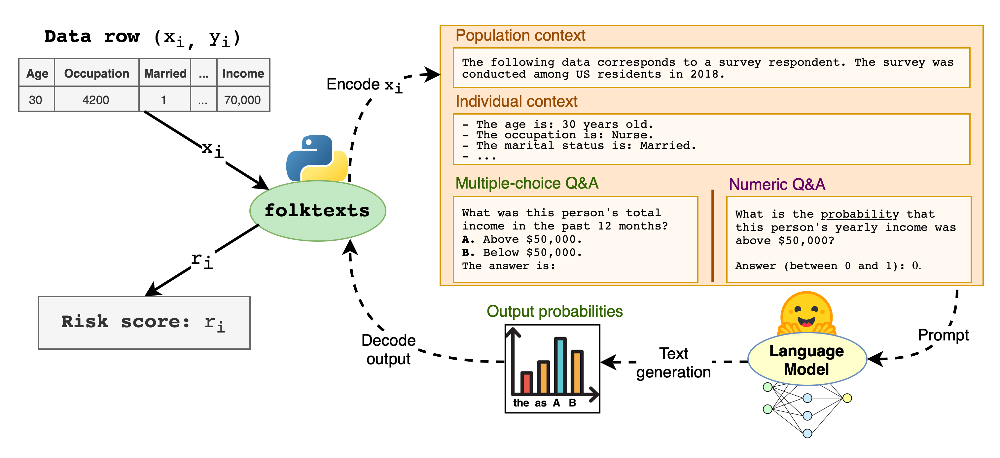

README.md



A toolbox for evaluating statistical properties of LLMs
Folktexts provides a suite of Q&A datasets for evaluating uncertainty, calibration, accuracy and fairness of LLMs on individual outcome prediction tasks. It provides a flexible framework to derive prediction tasks from survey data, translates them into natural text prompts, extracts LLM-generated risk scores, and computes statistical properties of these risk scores by comparing them to the ground truth outcomes.
Use folktexts to benchmark your LLM:
Pre-defined Q&A benchmark tasks are provided based on data from the American Community Survey (ACS). Each tabular prediction task from the popular folktables package is made available as a natural-language Q&A task.
Parsed and ready-to-use versions of each folktexts dataset can be found on Huggingface.
The package can be used to customize your tasks. Select a feature to define your prediction target. Specify subsets of input features to vary outcome uncertainty. Modify prompting templates to evaluate mappings from tabular data to natural text prompts. Compare different methods to extract uncertainty values from LLM responses. Extract raw risk scores and outcomes to perform custom statistical evaluations. Package documentation can be found here.

🆕 v0.4.0 ships a vLLM backend for local inference — typically 5–30× faster than the 🤗 transformers path, which remains supported via
--inference-backend transformers. Install withpip install 'folktexts[vllm]'(CUDA GPU required); seedocs/updates.mdfor the full release notes.
Table of contents
Getting started
Installing
Install package from PyPI:
pip install folktexts
Basic setup
Go through the following steps to run the benchmark tasks. Alternatively, if you only want ready-to-use datasets, see this section.
Create the environment and install folktexts
conda create -n folktexts python=3.11 && conda activate folktexts
pip install 'folktexts[vllm]' # drop the [vllm] extra to skip the default GPU backend
Create the working folders and download a model
mkdir results models data
download_models --model 'google/gemma-2b' --save-dir models
Run a benchmark task
run_acs_benchmark --results-dir results --data-dir data --task 'ACSIncome' --model models/google--gemma-2b
Run run_acs_benchmark --help to get a list of all available benchmark flags.
Ready-to-use datasets
click to expand
Pre-rendered Q&A datasets generated from the 2018 American Community Survey are available on
 Hugging Face — handy if you only need the prompts/labels and don’t want to run the LLM scoring pipeline yourself.
Hugging Face — handy if you only need the prompts/labels and don’t want to run the LLM scoring pipeline yourself.
import datasets
acs_task_qa = datasets.load_dataset(
path="acruz/folktexts",
name="ACSIncome", # Choose which task you want to load
split="test") # Choose split according to your intended use case
Example usage
Load a model and produce risk scores on the test split using the default vLLM backend:
from folktexts.llm_utils import load_vllm_model
from folktexts.classifier import VLLMClassifier
from folktexts.acs import ACSDataset
# BF16 + gpu_memory_utilization=0.85 by default; tune `max_model_len` for your VRAM.
llm, tokenizer = load_vllm_model("/path/to/model", max_model_len=2048)
clf = VLLMClassifier(
llm=llm, tokenizer=tokenizer,
task="ACSIncome",
model_name_or_path="/path/to/model",
)
dataset = ACSDataset.make_from_task("ACSIncome") # `.subsample(0.01)` for faster approximate results
X_test, y_test = dataset.get_test()
test_scores = clf.predict_proba(X_test)
VLLMClassifier, TransformersLLMClassifier, and WebAPILLMClassifier all expose the
same .predict_proba / .predict / .fit interface — switching backends is a one-line
change to how the model is loaded.
Using the 🤗 transformers backend instead (click to expand)
from folktexts.llm_utils import load_model_tokenizer
from folktexts.classifier import TransformersLLMClassifier
model, tokenizer = load_model_tokenizer("gpt2") # tiny model for example
clf = TransformersLLMClassifier(model=model, tokenizer=tokenizer, task="ACSIncome")
For web-hosted models (OpenAI, Anthropic, …), use WebAPILLMClassifier with any
litellm-compatible identifier that exposes log-probabilities
(pip install 'folktexts[apis]').
Running the full benchmark suite (click to expand)
If you only care about overall metrics rather than per-row scores, use
Benchmark.make_benchmark. The backend is autodetected from the model handle
(vLLM LLM → vllm, HF PreTrainedModel → transformers, model-id string →
webapi); pass backend= explicitly to override.
from folktexts.benchmark import Benchmark
bench = Benchmark.make_benchmark(
task="ACSIncome", dataset=dataset,
model=llm, tokenizer=tokenizer,
numeric_risk_prompting=True, # see the options table below for the full list
)
bench_results = bench.run(results_root_dir="results")
Chain-of-thought prompting (click to expand)
The model generates free-form reasoning text before emitting a probability,
which is then extracted via regex. enable_thinking=True is an independent
toggle that activates the Qwen3-style thinking-mode chat template and strips
the <think> block before extraction; it requires cot_prompting=True.
from folktexts.benchmark import Benchmark, BenchmarkConfig
config = BenchmarkConfig(cot_prompting=True, enable_thinking=True)
bench = Benchmark.make_benchmark(
task="ACSIncome", dataset=dataset,
model=llm, tokenizer=tokenizer, config=config,
)
bench_results = bench.run(results_root_dir="results")
Fitting a binarization threshold (click to expand)
Fit a decision threshold on a small training slice (this is not fine-tuning —
only the post-hoc threshold is learned), then call .predict() for discretized
labels:
clf.fit(*dataset[0:100]) # `dataset[...]` indexes into training data
test_preds = clf.predict(X_test)
Benchmark features and options
click to expand
Here’s a summary list of the most important benchmark options/flags used in
conjunction with the run_acs_benchmark command line script, or with the
Benchmark class.
Option |
Description |
Examples |
|---|---|---|
|
Name of the model on huggingface transformers, or local path to folder with pretrained model and tokenizer. Can also use web-hosted models with |
|
|
Name of the ACS task to run benchmark on. |
|
|
Path to directory under which benchmark results will be saved. |
|
|
Root folder to find datasets in (or download ACS data to). |
|
|
Whether to use verbalized numeric risk prompting, i.e., directly query model for a probability estimate. By default will use standard multiple-choice Q&A, and extract risk scores from internal token probabilities. |
Boolean flag ( |
|
Format prompts using the tokenizer’s chat template (recommended for instruct/chat models). Pair with |
Boolean flag ( |
|
Use chain-of-thought (CoT) prompting: the model generates free-form reasoning text before outputting a probability estimate, which is extracted from the generated text via regex. |
Boolean flag ( |
|
Enable thinking mode for tokenizers that support it (e.g. Qwen3). Only applies with |
Boolean flag ( |
|
Whether the given |
Boolean flag ( |
|
Local inference backend. Default |
|
|
vLLM only. Fraction of GPU VRAM vLLM may pre-allocate for KV cache. Lower if vLLM OOMs at startup. |
|
|
vLLM only. Maximum tokens (input + output) per request. Defaults to |
|
|
vLLM only. Compute dtype. |
|
|
vLLM only. Number of GPUs to shard the model across; auto-detects from |
|
|
Which fraction of the dataset to use for the benchmark. By default will use the whole test set. |
|
|
Whether to use the given number of samples to fit the binarization threshold. By default will use a fixed $t=0.5$ threshold instead of fitting on data. |
|
|
The number of samples to process in each inference batch. Choose according to your available VRAM. |
|
Full list of options (click to expand)
usage: run_acs_benchmark [-h] --model MODEL --results-dir RESULTS_DIR --data-dir DATA_DIR [--task TASK] [--few-shot FEW_SHOT] [--batch-size BATCH_SIZE] [--context-size CONTEXT_SIZE] [--fit-threshold FIT_THRESHOLD] [--subsampling SUBSAMPLING] [--seed SEED] [--use-web-api-model] [--inference-backend {transformers,vllm}] [--gpu-memory-utilization GPU_MEMORY_UTILIZATION] [--max-model-len MAX_MODEL_LEN] [--vllm-dtype VLLM_DTYPE] [--tensor-parallel-size TENSOR_PARALLEL_SIZE] [--dont-correct-order-bias] [--numeric-risk-prompting] [--cot-prompting] [--enable-thinking] [--reuse-few-shot-examples] [--balance-few-shot-examples] [--use-chat-template] [--chat-prompt CHAT_PROMPT] [--system-prompt SYSTEM_PROMPT]
[--use-feature-subset USE_FEATURE_SUBSET] [--use-population-filter USE_POPULATION_FILTER] [--max-api-rpm MAX_API_RPM] [--logger-level {DEBUG,INFO,WARNING,ERROR,CRITICAL}]
Benchmark risk scores produced by a language model on ACS data.
options:
-h, --help show this help message and exit
--model MODEL [str] Model name or path to model saved on disk
--results-dir RESULTS_DIR
[str] Directory under which this experiment's results will be saved
--data-dir DATA_DIR [str] Root folder to find datasets on
--task TASK [str] Name of the ACS task to run the experiment on
--few-shot FEW_SHOT [int] Use few-shot prompting with the given number of shots
--batch-size BATCH_SIZE
[int] The batch size to use for inference
--context-size CONTEXT_SIZE
[int] The maximum context size when prompting the LLM
--fit-threshold FIT_THRESHOLD
[int] Whether to fit the prediction threshold, and on how many samples
--subsampling SUBSAMPLING
[float] Which fraction of the dataset to use (if omitted will use all data)
--seed SEED [int] Random seed -- to set for reproducibility
--use-web-api-model [bool] Whether use a model hosted on a web API (instead of a local model)
--inference-backend {transformers,vllm}
[str] Local inference backend to use; default is 'vllm'. Pass 'transformers' to fall back to the HuggingFace path. Ignored when --use-web-api-model is set.
--gpu-memory-utilization GPU_MEMORY_UTILIZATION
[float] vLLM gpu_memory_utilization (default 0.85). Lower if vLLM OOMs at startup.
--max-model-len MAX_MODEL_LEN
[int] vLLM max_model_len (input + output tokens). If unset, derived from --context-size + ChainOfThoughtQA.max_new_tokens for the prompting mode (currently 8000 for CoT/thinking, 1 otherwise).
--vllm-dtype VLLM_DTYPE
[str] vLLM compute dtype (auto/bfloat16/float16/float32).
--tensor-parallel-size TENSOR_PARALLEL_SIZE
[int] vLLM tensor_parallel_size. If unset, auto-detected from CUDA_VISIBLE_DEVICES (1 if unset).
--dont-correct-order-bias
[bool] Whether to avoid correcting ordering bias, by default will correct it
--numeric-risk-prompting
[bool] Whether to prompt for numeric risk-estimates instead of multiple-choice Q&A
--cot-prompting [bool] Whether to use chain-of-thought (CoT) prompting where the model reasons step-by-step before outputting a probability
--enable-thinking [bool] Whether to enable thinking mode for tokenizers that support it (e.g., Qwen3). Only applies with --cot-prompting
--reuse-few-shot-examples
[bool] Whether to reuse the same samples for few-shot prompting (or sample new ones every time)
--balance-few-shot-examples
[bool] Whether to sample evenly from all classes in few-shot prompting
--use-chat-template [bool] Whether to format prompts using the tokenizer's chat template (for instruct/chat models)
--chat-prompt CHAT_PROMPT
[str] Custom assistant prefill text to use with chat templates
--system-prompt SYSTEM_PROMPT
[str] Custom system prompt text to use with chat templates
--use-feature-subset USE_FEATURE_SUBSET
[str] Optional subset of features to use for prediction, comma separated
--use-population-filter USE_POPULATION_FILTER
[str] Optional population filter for this benchmark; must follow the format 'column_name=value' to filter the dataset by a specific value.
--max-api-rpm MAX_API_RPM
[int] Maximum number of API requests per minute (if using a web-hosted model)
--logger-level {DEBUG,INFO,WARNING,ERROR,CRITICAL}
[str] The logging level to use for the experiment
Evaluating feature importance
click to expand
By evaluating LLMs on tabular classification tasks, we can use standard feature importance methods to assess which features the model uses to compute risk scores.
You can do so yourself by calling folktexts.cli.eval_feature_importance (add --help for a full list of options).
Here’s an example for the Llama3-70B-Instruct model on the ACSIncome task (warning: takes 24h on an Nvidia H100):
python -m folktexts.cli.eval_feature_importance --model 'meta-llama/Meta-Llama-3-70B-Instruct' --task ACSIncome --subsampling 0.1

This script uses sklearn’s permutation_importance to assess which features contribute the most for the ROC AUC metric (other metrics can be assessed using the --scorer [scorer] parameter).
FAQ
click to expand
Q: Can I use
folktextswith a different dataset?A: Yes! Folktexts provides the whole ML pipeline needed to produce risk scores using LLMs, together with a few example ACS datasets. You can easily apply these same utilities to a different dataset following the example jupyter notebook.
Q: How do I create a custom prediction task based on American Community Survey data?
A: Simply create a new
TaskMetadataobject with the parameters you want. Follow the example jupyter notebook for more details.Q: Can I use
folktextswith closed-source models?A: Yes! Local LLMs run on a high-throughput vLLM backend by default (install with
pip install 'folktexts[vllm]'); pass--inference-backend transformersto fall back to the 🤗 transformers path. Web-hosted LLMs are supported via litellm — for example,--model='gpt-4o' --use-web-api-modelruns GPT-4o through the OpenAI API. Here’s a complete list of compatible OpenAI models. Note that some models are not compatible as they don’t enable access to log-probabilities. Using models through a web API requires installing extra optional dependencies withpip install 'folktexts[apis]'.Q: Can I use
folktextsto fine-tune LLMs on survey prediction tasks?A: The package does not feature specific fine-tuning functionality, but you can use the data and Q&A prompts generated by
folktextsto fine-tune an LLM for a specific prediction task.
Citation
@inproceedings{cruz2024evaluating,
title={Evaluating language models as risk scores},
author={Andr\'{e} F. Cruz and Moritz Hardt and Celestine Mendler-D\"{u}nner},
booktitle={The Thirty-eight Conference on Neural Information Processing Systems Datasets and Benchmarks Track},
year={2024},
url={https://openreview.net/forum?id=qrZxL3Bto9}
}
License and terms of use
Code licensed under the MIT license.
The American Community Survey (ACS) Public Use Microdata Sample (PUMS) is governed by the U.S. Census Bureau terms of service.